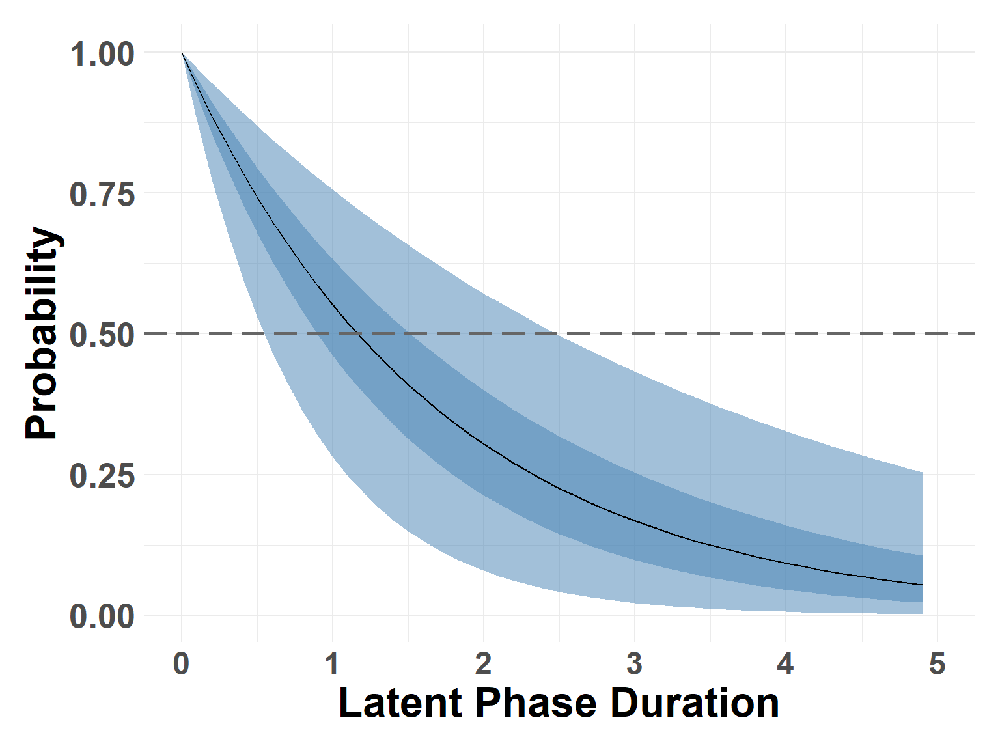
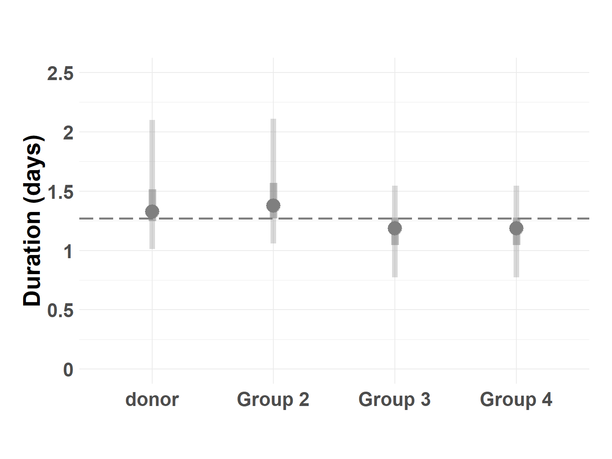

Latent Phase
Parmetric survival model for latent phase durataion
Shedding Threshold
Published FMDV shedding estimate is around 3.92
Hide code
donor_thresh <- antem_df %>%
filter(group == "donor" & dpi == 2) # day of contact with Group 2
donor_thresh$nasal[1] 3.706999 6.411625Hide code
mean(donor_thresh$nasal)[1] 5.059312Designate end of latent based on shed rate.
Hide code
latent_end_df <- antem_df %>%
filter(nasal >= 3.92 & nasal != 45) %>%
group_by(animal) %>%
filter(date == min(date)) %>%
mutate(latent_end = 1) %>%
ungroup()Quick stats to check data
Hide code
latent_end_df %>%
summarise(mean_dpe = mean(dpe),
median_dpe = median(dpe),
min_range = min(dpe),
max_range = max(dpe))| mean_dpe | median_dpe | min_range | max_range |
|---|---|---|---|
| 1.428571 | 1 | 1 | 4 |
Prepare Data
Scale Time Add an arbitrarily small value to eliminate zeros. Really not need with his specific data set, by an important step.
Hide code
latent_end_df$scaled_duration <- latent_end_df$dpe + 0.0001Scale Serum Scaling serum as potential covariate.
Hide code
latent_end_df$serum_0 <- latent_end_df$serum
latent_end_df$serum_0[latent_end_df$serum_0 == 45] = 0
latent_end_df$serum_0 <- as.numeric(scale(latent_end_df$serum_0, scale = T, center = F))Models
Response Variable Creating a survival object to ensure time and censored animals are correctly indicated.
Hide code
surv_obj <- inla.surv(latent_end_df$scaled_duration, latent_end_df$latent_end)Parametric model for study-wide average duration.
Hide code
return_quants <- c(0.025, 0.05, 0.25, 0.5, 0.75, 0.95, 0.975)
latent_end_mod <- inla(surv_obj ~ 1 + serum_0,
data = latent_end_df,
verbose=FALSE,
quantiles = return_quants,
family = "exponential.surv",
control.fixed = list(prec = 1, prec.intercept = 0.001),
control.compute=list(dic = TRUE, cpo = FALSE, waic = TRUE))Treatment is specific to group therefore using group below to identify important differences.
Hide code
return_quants <- c(0.025, 0.05, 0.25, 0.5, 0.75, 0.95, 0.975)
pc_prec_iid <- list(theta = list(prior="pc.prec",
param=c(1, 0.001)))
latent_aft_mod <- inla(surv_obj ~ 1 +
f(group,
model = "iid",
constr=FALSE,
hyper=pc_prec_iid),
data = latent_end_df,
verbose=FALSE,
quantiles = return_quants,
family = "lognormal.surv",
control.fixed = list(prec = 1, prec.intercept = 0.0001),
control.compute=list(dic = TRUE, cpo = FALSE, waic = TRUE))Sample Marginals
Performing sampling on the model results
Hide code
latent_samples <- compute_survival_marginals(latent_end_mod, 5)Check estimates at the 0.5 probability (median)
Hide code
median_latent <- find_closest_quant(latent_samples, 0.5)
median_latent$quant0.025
[1] 0.501
$quant0.25
[1] 0.901
$quant0.5
[1] 1.201
$quant0.75
[1] 1.501
$quant0.975
[1] 2.501Survival Curve
Hide code
plot_survival_marginals(latent_samples, x_max = 5, xlabel = "Latent Phase Duration")
AFT Treament Effects
Get treatment-level estimated duration
Hide code
aft_latent <- latent_aft_mod$summary.random$group[,c(1:4,6,7,8, 10)]
names(aft_latent) <- c("Group","Mean", "sd", "Q_0.025","Q_0.25", "Q_0.5", "Q_0.75", "Q_0.975")
mean_aft <- latent_aft_mod$summary.fixed$mean
aft_latent[,2:8] <- exp(aft_latent[,2:8] + mean_aft)
study_wide <- exp(latent_aft_mod$summary.fixed[,c(1:3, 5:7, 9)])
rownames(study_wide) <- NULL
names(study_wide) <- c("Mean", "sd", "Q_0.025","Q_0.25", "Q_0.5", "Q_0.75", "Q_0.975")
study_wide$Group <- "study"
aft_latent <- rbind(study_wide, aft_latent)
aft_latent| Mean | sd | Q_0.025 | Q_0.25 | Q_0.5 | Q_0.75 | Q_0.975 | Group |
|---|---|---|---|---|---|---|---|
| 1.270207 | 1.173833 | 0.9259857 | 1.148989 | 1.268414 | 1.401915 | 1.757435 | study |
| 1.381136 | 1.517493 | 1.0116252 | 1.247324 | 1.329053 | 1.515215 | 2.099118 | donor |
| 1.420993 | 1.509849 | 1.0590048 | 1.269587 | 1.378708 | 1.568838 | 2.110296 | Group 2 |
| 1.149395 | 1.507885 | 0.7736175 | 1.044813 | 1.185920 | 1.278711 | 1.545068 | Group 3 |
| 1.149395 | 1.507885 | 0.7736175 | 1.044813 | 1.185920 | 1.278711 | 1.545068 | Group 4 |
Compare treatment groups
Hide code
plot_aft_linerange(latent_aft_mod, y_min = 0, y_max = 2.5, brks = 0.5, ylimit = 2.5)Warning: Using `size` aesthetic for lines was deprecated in ggplot2 3.4.0.
ℹ Please use `linewidth` instead.
save latent samples
Hide code
saveRDS(latent_samples, here("assets/latent_samples.rds"))
saveRDS(median_latent, here("assets/latent_median.rds"))
saveRDS(aft_latent, here("assets/latent_aft_median.rds"))